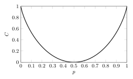

Tema 8. Capacitat de canal pdf
Introducció
Fins ara hem vist exemples de codis de canal, com el codi de repetició o el codi (7,4) de Hamming, l'objectiu dels quals és transmetre informació de manera fiable a través d'un canal de comunicació utilitzant el diagrama de blocs de la Figura 8.1. Amb aquest sistema, transmetem $k=\log_2 M$ bits d'informació usant $n$ usos del canal, on $n$ és la longitud de les seqüències $\x_m$ i $\y$.
Desitgem dissenyar codis capaços de transmetre informació a una taxa $R=\frac kn$ el més alta possible amb una probabilitat d'error $P_{\rm e}$ el més petita possible. Diem que la comunicació fiable és possible a una taxa $R$ si $\lim_{n\to\infty} P_{\rm e}=0$. La taxa més gran $R$ a la qual la comunicació fiable és possible és la capacitat del canal.
Capacitat de canal
La capacitat d'un canal discret sense memòria amb entrada $X\in{\cal X}$, sortida $Y\in{\cal Y}$ i probabilitat de transició $P_{Y|X}(y|x)$, denotada per $C$ i derivada per Shannon el 1948, ve donada per $$ C = \max_{\px(x)} I(X;Y), \tag{8.1} $$ on la maximització és sobre totes les possibles distribucions d'entrada, i $I(X;Y)$ és la informació mútua entre l'entrada $X$ i la sortida $Y$, donada per $$ I(X;Y) = \sum_{x\in{\cal X}}\sum_{y\in{\cal Y}} P_X(x) P_{Y|X}(y|x) \log_2 \frac{P_{Y|X}(y|x)}{P_{Y}(y)}. \tag{8.2} $$ En altres paraules, per trobar la capacitat d'un canal discret sense memòria, cal calcular la informació mútua a $(8.2)$ per a totes les distribucions d'entrada possibles $P_X(x)$ i trobar la distribució d'entrada que la maximitza. El valor màxim resultant de la informació mútua és la capacitat del canal $C$, i la distribució d'entrada que condueix a la capacitat del canal s'anomena distribució d'entrada que assoleix la capacitat, denotada com $P_X^\star(x)$. La informació mútua $(8.2)$ pot interpretar-se com la quantitat d'informació que una variable aleatòria $Y$ té sobre una altra variable aleatòria $X$, o també pot entendre's com la reducció d'incertesa sobre $X$ un cop observem $Y$ com veurem a la secció següent.
Hi ha dues implicacions importants pel que fa a la informació mútua i la comunicació fiable:
- (a) Per a una distribució d'entrada $P_X(x)$, és possible transmetre de forma fiable a una taxa $R<I(X;Y)$ perquè existeixen codis tals que $P_{\rm e}\to 0$ quan $n\to\infty$.
- (b) Per contra, per a $R>I(X;Y)$, la comunicació fiable no és possible ja que no hi ha cap codi la probabilitat d'error del qual $P_{\rm e}\to 0$ quan $n\to\infty$.
Abans de veure un exemple detallat sobre el càlcul de la capacitat del canal d'un canal simètric binari, establim una sèrie de relacions entre la informació mútua i les entropies.
Informació mútua i entropies
La informació mútua a $(8.2)$ pot interpretar-se com el valor esperat de la variable aleatòria $Z=f(X,Y)$, la funció de dues variables $f(x,y)=\log_2\frac{P_{Y|X}(y|x)}{P_Y(y)}$. És a dir, $I(X;Y)=\mathbb{E}[f(X,Y)]$. Usant que la distribució conjunta de $X$ i $Y$ es pot escriure com $$ P_{XY}(x,y) = P_{Y|X}(y|x)P_X(x) = P_{X|Y}(x|y)P_Y(y), \tag{8.3} $$ i expandint el logaritme, obtenim que la informació mútua es pot escriure de diverses maneres, incloent-hi $$\begin{align} I(X;Y) &= \EE\bigg[\log_2\frac{\pyx(y|x)}{\py(y)}\bigg] = \mathbb{E}\bigl[\log_2\pyx(y|x)\bigr] - \mathbb{E}\bigl[\log_2\py(y)\bigr] \tag{8.4}\\ &= \EE\bigg[\log_2\frac{\pxy(x,y)}{\px(x)\py(y)}\bigg] = \EE\bigl[\log_2\pxy(x,y)\bigr] - \EE\bigl[\log_2\px(x)\bigr]-\EE\bigl[\log_2\py(y)\bigr]\tag{8.5}\\ &= \EE\bigg[\log_2\frac{\pxcy(x|y)}{\px(x)}\bigg] = \mathbb{E}\bigl[\log_2\pxcy(x|y)\bigr] - \mathbb{E}\bigl[\log_2\px(x)\bigr]\tag{8.6}\\ &=I(Y;X),\tag{8.7} \end{align}$$ la qual cosa implica que la informació mútua és una quantitat simètrica ja que $I(X;Y)=I(Y;X)$. És fàcil observar que molts dels termes de les expressions anteriors són esperances del logaritme de distribucions de probabilitat, que de fet són entropies! Definim les quantitats següents $$\begin{gather} H(X) = -\sum_{x\in{\cal X}}\px(x)\log_2 \px(x) \tag{8.8}\\ H(X,Y) = -\sum_{x\in{\cal X}}\sum_{y\in{\cal Y}}\pxy(x,y)\log_2 \pxy(x,y) \tag{8.9}\\ H(Y|X) = -\sum_{x\in{\cal X}}\sum_{y\in{\cal Y}}\pxy(x,y)\log_2 \pyx(y|x) \tag{8.10}\end{gather}$$ on $H(X)$ és l'entropia de $X$, $H(X,Y)$ és l'entropia conjunta de $X,Y$ i $H(Y|X)$ és l'entropia condicional de $Y$ donat $X$, que es pot reescriure com $$\begin{align} H(Y|X) &= -\sum_{x\in{\cal X}}\sum_{y\in{\cal Y}}\px(x)\pyx(y|x)\log_2 \pyx(y|x) \tag{8.11}\\ &= \sum_{x\in{\cal X}}\px(x)\bigg(-\sum_{y\in{\cal Y}} \pyx(y|x)\log_2 \pyx(y|x)\bigg) \tag{8.12}\\ &= \sum_{x\in{\cal X}}\px(x) H(Y|X=x) \tag{8.13}\end{align}$$ on $$ H(Y|X=x) = -\sum_{y\in{\cal Y}} \pyx(y|x)\log_2 \pyx(y|x) \tag{8.14}$$ és l'entropia condicional de $Y$ per a un determinat $x$. L'entropia, més enllà de ser el límit fonamental de la compressió de dades, té una interpretació de la incertesa d'una variable aleatòria. Usant les definicions anteriors (compte amb els signes!), podem escriure les equacions $(8.4)$, $(8.5)$, $(8.6)$ i $(8.7)$ com $$\begin{align} I(X;Y) &= H(Y) - H(Y|X) \tag{8.15}\\& = H(X) + H(Y) - H(X,Y) \tag{8.16}\\& = H(X) - H(X|Y) \tag{8.17}\\& = I(Y;X). \tag{8.18}\end{align}$$
Acabem aquesta secció enunciant tres propietats importants de l'entropia i la informació mútua:
- La informació mútua és una quantitat no negativa, és a dir $I(X;Y)\geq 0$ amb igualtat si i només si $X$ i $Y$ són independents.
- L'entropia també és una quantitat no negativa el límit superior de la qual és $H(X)\leq \log_2|{\cal X}|$, amb igualtat si i només si $X$ té símbols equiprobables.
- El condicionament redueix l'entropia, és a dir, $H(Y|X)\leq H(Y)$, la qual cosa suggereix que conèixer una altra variable aleatòria $X$ només pot reduir la incertesa present a $Y$.
Canal binari simètric
Ara calcularem la capacitat del canal binari simètric. Com que l'entrada és binària, tenim que $X\in\{0,1\}$ amb distribució de probabilitat $\{q,1-q\}$, és a dir, $ \px(0) = q$ i $\px(1)=1-q$. Atès que $P_X(x)$ només depèn d'un paràmetre $q$, que satisfà $0\leq q \leq 1$, podem reescriure l'expressió de capacitat a $(8.1)$ com $$ C = \max_{0\leq q \leq 1} I(X;Y). \tag{8.19} $$ Per calcular $(8.19)$, partim de l'expressió convenient de la informació mútua a $(8.15)$, és a dir, $I(X;Y)=H(Y)-H(Y|X)$. Per al canal simètric binari amb probabilitat de canvi de bit $p$ tenim que $P_{Y|X}(0|1)=P_{Y|X}(1|0)=p$. Per tant, l'entropia condicional $H(Y|X)$ es pot calcular com $$\begin{align} H(Y|X) & = -\sum_{x\in\{0,1\}}\sum_{y\in\{0,1\}} \px(x)\pyx(y|x) \log_2\pyx(y|x) \tag{8.20}\\ & = \underbrace{q\Big[(1-p) \log_2\frac{1}{1-p} + p\log_2\frac1p \Big]}_{x=0} + \underbrace{(1-q)\Big[(1-p) \log_2\frac{1}{1-p} + p\log_2\frac1p \Big]}_{x=1} \tag{8.21}\\ & = \underbrace{(1-p) \log_2\frac{1}{1-p} + p\log_2\frac1p}_{h_2(p)}. \tag{8.22} \end{align}$$ L'última expressió és la funció d'entropia binària, que denotem com $h_2(p)$.
A més, sabem que l'entropia de la sortida $H(Y)$ satisfà $ H(Y) \leq \log_2(2) = 1$ i que $H(Y)=1$ s'assoleix quan $Y$ té símbols equiprobables. Per la llei de probabilitat total, la distribució de la sortida és $P_Y(0)=q(1-p)+(1-q)p$. Si la distribució d'entrada és $P_X(0)=q=\frac 12$, llavors $P_Y(0)=\frac 12$ i, per tant, $H(Y)=1$ assoleix el valor màxim possible independentment de $p$. Atès que $H(Y|X)$ a (8.22) no depèn de $q$, concloem que $P_X^\star(0)=\frac 12$ és la distribució d'entrada que assoleix la capacitat i que la capacitat del canal és $$ C(p) = 1-h_2(p) ~\text{bits/ús de canal}. \tag{8.23} $$ Il·lustrem $(8.23)$ a la Figura 8.2.

Hi ha quatre punts finals interessants a tenir en compte:
- Si $p=0$, no hi ha canvis de bit, el canal no té soroll i la capacitat és $C=1$ bit/ús de canal. En aquest cas, no cal codificar.
- Si $p = \frac12$, el canal canvia bits amb igual probabilitat i el millor que es pot fer al descodificador és endevinar.
- Observeu la simetria per a $p>\frac12$. Per exemple, per a $p=1$ on s'inverteixen tots els bits, n'hi ha prou amb revertir la sortida del canal de manera determinista i encara podem transmetre de manera fiable a $1$ bit per ús de canal.
- Si $p=0.11$ tenim que $C=0.5$, és a dir, si volem transmetre de forma fiable amb un codi de taxa $R=\frac12$ només ho podrem fer si $p<0.11$.